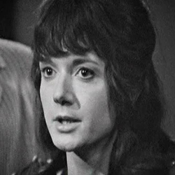

| Home | The Doctors | The Companions | The Villains |
|
|||
| cf
KaterinaA handmaiden of the Trojan prophetess Cassandra, Katarina helped the wounded Steven Taylor back to the TARDIS, at the height of the siege of Troy. Convinced that the Doctor was the embodiment of Zeus, she believes his “temple” is taking her on a journey to the afterlife. |